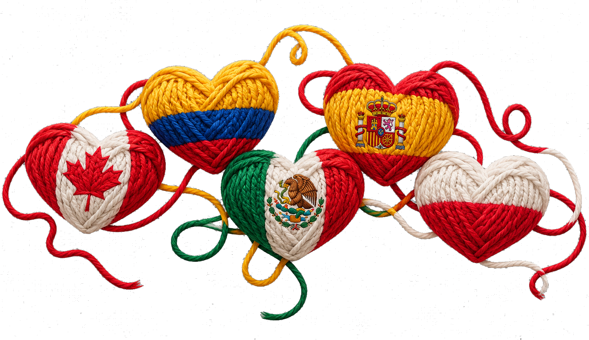
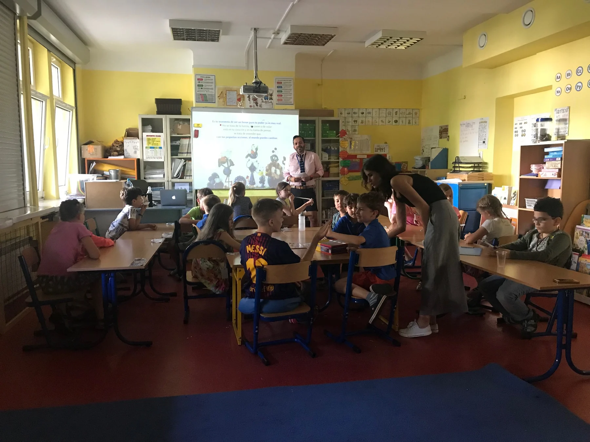
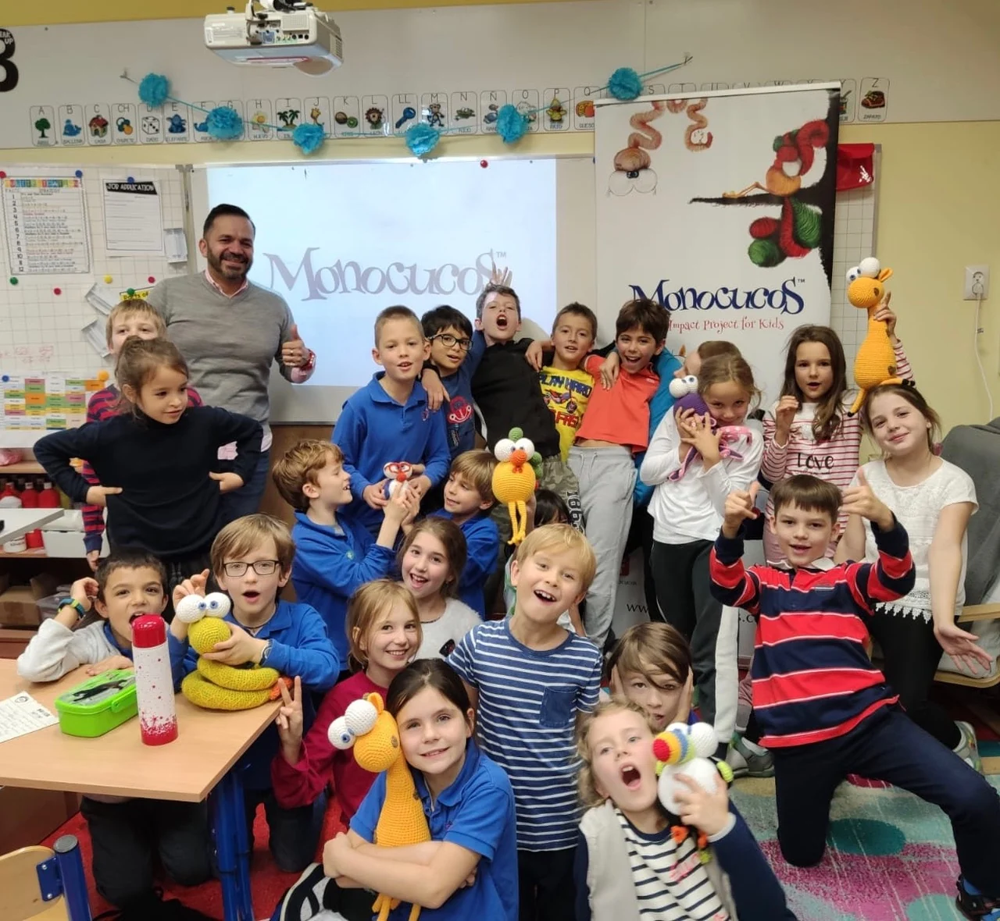
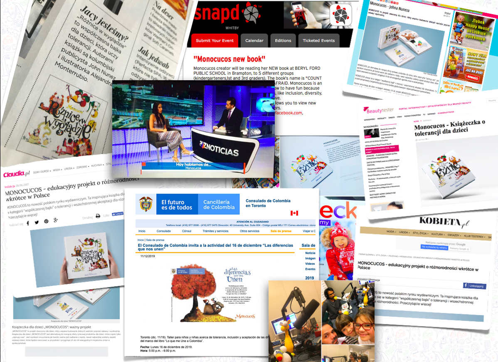

EJE CENTRAL
Bullying / convivencia
El eje central de MONOCUCOS: experiencias para trabajar empatía, inclusión, aceptación y convivencia, ayudando a los niños a comprender las diferencias y construir relaciones más sanas.
Las historias también pueden transformar realidades.

MONOCUCOS lleva sus personajes, historias y herramientas a diferentes contextos para trabajar con niños, familias, educadores e instituciones.

El eje central de MONOCUCOS: experiencias para trabajar empatía, inclusión, aceptación y convivencia, ayudando a los niños a comprender las diferencias y construir relaciones más sanas.
Personajes e historias como recursos para aprender de otra manera.
MONOCUCOS se adapta a distintos territorios, familias y realidades.
Colaboraciones que convierten el universo MONOCUCOS en experiencias compartidas.
Historias y experiencias para acompañar emocionalmente a niños y familias.
Herramientas para conversar con los niños sobre decisiones, presión social y cuidado.


Una dimensión social, cultural y diplomática que lleva MONOCUCOS a nuevos territorios y conecta historias, identidad y comunidad.
MONOCUCOS crea puentes entre imaginación, educación y acción para que las historias puedan vivirse también fuera del libro.